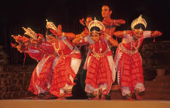

üé≠‚ú® Dance and Music of Madhya Pradesh ‚Äì A Rhythmic Fusion of Grace and Heritage üï∫üé∂
üé≠ Traditional Dances
Rai Dance – A famous dance of Bundelkhand, performed by women with graceful movements
Matki Dance – A Malwa folk dance where women balance pots (matkis) on their heads.
Tertali Dance – A unique Kamar tribe dance where women play manjiras (cymbals) while sitting.
Saila Dance – Performed by Gond tribals, a group dance with rhythmic stick movements.
Bhagoria Dance – A colorful tribal dance performed during the Bhagoria festival in Jhabua & Alirajpur.
Karma Dance – A sacred dance of the Gond & Baiga tribes, performed during the Karma festival.


Grida Dance – A harvest dance performed by farmers in rural areas.
Naurata Dance – A Navratri special dance performed in Malwa & Bundelkhand.

üé∂ Soulful Music : Melodies of Spirituality and Grace
Bhopa-Bhopi Music – Folk songs sung by traditional storytellers with instruments like ravanahatha.
Pandwani – A unique form of storytelling through music, narrating the Mahabharata tales.
Tribal Songs – Gond, Baiga, and Bhil tribes have unique folk songs for rituals, harvest, and festivals.
Aheer Music – Sung by the Ahir community, featuring themes of bravery and rural life.

Tansen Music Festival (Gwalior) – A prestigious event dedicated to Tansen, a legendary musician of Akbar’s court.
Gwalior Gharana – One of the oldest Hindustani classical music traditions, known for Dhrupad & Khayal singing.